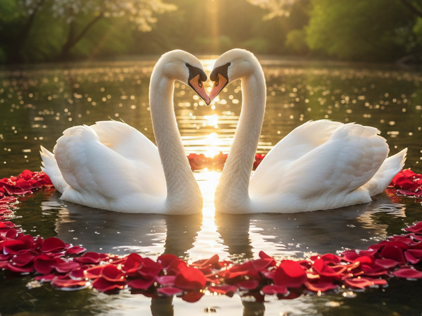
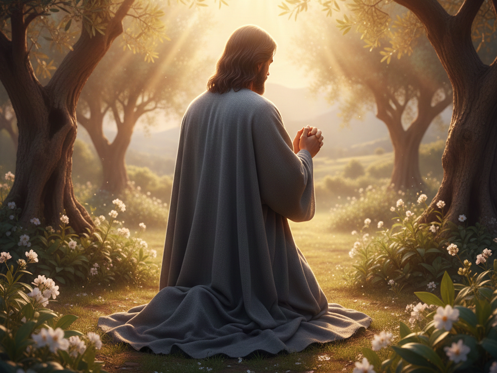

Цей веб-сайт присвячений Ісусові Христові: Творцеві Всесвіту, Який Полюбив нас усім Своїм серцем!
(Вступні слова про Любов перед тим, як розповісти про Ісуса!)
(Адже і Сам Ісус, Найвеличніший, Чиста Любов, прийшов у цей світ, щоби Самому всім послужити! Адже Той є Величним, Чия Любов Найбільша!)
(Любов з Великої літери, тому що це жертвенна, Свята, Самим Богом дарована Любов (агапе)!)
Блага звістка в одному співучому, значущому, променистому слові "Любов"!
Краса *Любові*:
" Любов Чиста, як блиск роси, сріблястої краси, на пелюстці ніжного лотусу, що купається у золотокудрих промінчиках сонця! Любов Лагідна, як дотик сонця до квітки вранці, Чула, як квітонька, що розмружується для працьовитої бджілки! (Бо світ настільки продуманий і дивовижно поєднаний, що квітка знає вагу бджілки, що сідає на її пелюстку!)
Любов Радісна, як приходу весни пташка, як сонячному зайчику дитя, як весняний водограйчик, що спішить принести життя! Любов — це Світло, що душу пробуджує, як світанок, гріє промінчиками Доброти, сяйвом Милості, лагідним дотиком Чуйності! (Як полярне сяйво, що є музикою небесного фортепіано, що бачать очі, так і Любов є зворушливим Світлом, що бачить серце! Вона осяює глибини душі, реанімує серце голосом Совісті , сповнює очі життєвого сяйва!) Її Вірність — благоухання півоній, що облагорожують увесь квітучий сад! Її Вірність — величезний, незламний цеп, протянутий по дну моря, здатний зупинити флотилію! Її Відданість (до останку) — це політ сніжинки, витонченої природньої краси, вишуканішої за діаманти! Її Відданість — це полум'я, що тримає у теплі і затишку всю оселю! Її Ніжність — це поле пшениці, яким може прогодуватись все місто! Її Ніжність — це весь світ, принесений на долонях, наче квітка!
Надійність Любові — як світло зірок, що долають парсеки космосу, щоби бути в оксамиті ночі розкішним алмазним розсипом! Любов Миролюбива і Втішлива, як озерце, облюбоване качками і каченятами, що купаються в іскорках сонячної доріжки (зігріті родинним теплом)! Вона Спочутлива і Відкличлива, Самовіддана, Щира, як роса, Цінуюча, Уважна, ближніми дорожить, Чесна! (Ніколи не зачиняє серце перед ближнім у нужді!)
Любов Віддана, як сніжинка, до останку, Вірна навічно, як потік ріки Безупинна, Невичерпна, Адамантова, Незмінна в Усій Своїй Красі в Усій Вічності, Вічна! Любов Вдячна, як квітка, що годує бджілку! Вона Милосердна, як дощ (помірний), Пробачлива, як дитя, Турботлива, як весінній вітерець, що розносить насіння! Любов Щедра, як лапатий снігопад, що платиновою красою ніч прикрашає, день у свій чистий постільний оксамит зодягає! Любов Безкорислива, як сонечко, що віддає і радіє, Безумовна, як небо, Сумирна, як арктичний льодовик! Її Сила — як блискавки, як серце зірки, Її Велич — як водоспаду, Її Скромність — як легесенької бавовняної хмарки! "
Такою є Богом дарована, Чиста, Свята, Лагідна Любов!
(У Любов Бог весь світ від усіх холодів зодягнув, ліпше ніж літо у листя зелене і зиму у білий пухкий оксамит! Самі серця людські Він за обрисом Любові створив! Дизайном Любові є людське життя, бо попри всі негаразди, що має цей світ, дещо більше за весь світ Він нам дарував, і наших Любимих! Наш Бог і наші Любимі — пристань наших сердець! Любов — це Святого Духа дарунок, Цілюща, рятівна Сила, "Зв'язок Досконалості" (як називає Любов Біблія), Найвеличніша Сила (бо і все різномаїття краси, що приведено в дійсність, почалося з Любові!), природне наповнення кожного серця, як задумане Богом! Місце пробування кожного з нас, як пташини — у небі, людського серця — у Вічній, Світлішій за небо, Довершеній Божій Любові!)
Милостива і Добра, Любов прощає те, що спричинює рани, і не відповідає злом за зло, не заздрить, не величається, а лагідна і служить ближнім із Радістю, не пихата, не злісна, не задумує зла, а сумирна, скромна і доброзичлива, не шукає власного, а щиро і віддано шукає Добра для інших, не рветься до гніву, а терпляча наскільки це потрібно, не радіє злу, а Добром тішиться, безкорисливо віддана, вірна, Вічна, за всіма ознаками неземна: ніколи не минає, ніколи не зраджує, ніколи не слабшає, сподівається всього і все перетерплює!
(Чистіша за все у світі, Лагідне Світло: Добра і Милостива, Чуйна, Турботлива, Чула, Щира і Радісна! Власна краса Любові: Добробут Її Любимих! Одна з найдивовижніших властивостей Любові: Блаженніше давати ніж приймати! Це природа Любові: бути Щасливою, коли чинить Добро! Одна з найдивовижніших Сил Любові — це Невичерпне Прощення! (Як і Сам Бог огорнув у Своє прощення весь світ!) Любов Самовіддана, не шукає власного! Щастя — це Щастя Любимих!)
Знайте, що ніхто нічого не може забрати з цього життя у вічне — окрім наших Любимих! Тому і так важлива Любов, і щоби цінності наші були правильними! Все, що ви маєте фізичне — все замінне! Ваші близькі — незамінні! Цьому і вчить Бог, щоби Любити своїх ближніх!
Кожний із нас створений за Подобою Божою, як Божа дитина, щоби мати Найвеличнішу Божу здібність: Любити! Розуміти, що турбота про ближніх — це Радість, що чесність дорожча за діаманти, це і є бути образом Божим! Природа Самого Бога: щиросердечно Любити! "Не словами одними, а ділом і правдою Любіть!" — спонукає Біблія. Цінуйте інших, дорожіть ближніми, дбайте про Любимих, проявляйте милість до ворогів!
Любов проганяє будь-який страх!
Слова-атрибути, що як алмазний порох, що Любов описують: Безкорислива Відданість, Доброта, Вірність, Чесність, Терпіння, Турбота, Щирість, Чуйність, Безумовність, Чистота, Вічність, Милосердя, Пробачливість, Лагідність, Радість, Вдячність, Сумирність, Скромність, Увага, Спочутливість, Самовідданість, Цінування інших, повна Присвяченість, Чулість, Ласкавість, Ніжність! (Усього, що Добре і Чисте, Повнота!)
(Тому що ми створені за Подобою Божою, тому і розуміємо всі ці так значущі, Фундаментальні слова!)
Любов же, дарована Богом у серце, більша за цей світ, як сонце більше за годовану ним квітку!
Любов же, Велична і Вища за Небо, і є найбільшим свідоцтвом про Бога: дивовижним, беззаперечно розкішним дизайном від Того, Хто Все, що існує, створив!
Цей Дивовижний Творець, що Весь Всесвіт створив, Син Божий і Бог: Ісус Христос!
Він Все, що існує, створив: Все за дизайнами Батька, Якого Любить , шанує і довіряє Йому всім Своїм серцем!
Світлом Любові Він освітив увесь світ, давши Люблячого Духа Святого кожному світлолюбному творінню у світі!
І Сам Він не Славу на Небесах, не Трон Небесний, не Своє життя, а нас Полюбив більше за Себе!
(Віддав Своє життя за Любимих, щоби кожний із нас міг жити!)
Любов Ісус дав світові як Найголовніший Закон: "Любіть одне одного, як Я Полюбив вас!"
(Мовить Біблія про Любов: "Кожний, хто Любить, той народився від Бога і знає про Бога! ")
(Кожний, хто Любить, не блукає серцем, а як Лю́ба дитина чинить волю Небесного Батька! Природа кожної Божої дитини: Любити!)
Щоби всім серцем, віддано до останку, безкорисливо і безумовно Любити , для цього Все, що існує, і створене!
(Струмочок слів Радості про Любов:)
Найвеличніша Сила "Любов", що як зірки серце не дає потухнути зірці, тому і світ цей минущий не є більше немилим і радістю непідробною, що не відняти, серце повниться, бо у справжньому центрі цього світу не багатства, не слава, не самовдоволення (що не принесе Щастя ніколи), а цінності Вічні: Лагідність і Доброта, Відданість і Чесність, Турбота і одне одному Вірність (бо так Бог владнав, щоби справжні цінності були Вічними)!
Про Любов, що як є, то сяє яскравіше за сонце у світі, можна вилити океан слів, та найголовніше, що кожен має знати, що Сам
(Для цього Ісус і прийшов у цей світ, всі гріхи світу спокутивши, щоби ми могли мати це життя!)
("Життя" у словнику Бога — це і є Вічна Любов з Богом і близькими людьми, яких Бог дарував нам на це життя і на вічне!)
P.S. Заповіді Божі: Любіть своїх ближніх! Будьте милостиві до ворогів! Прощайте іншим! Будьте вдячні за все!
Бог є Любов'ю і кожний, хто перебуває в Любові, той перебуває у Бозі! (І Бог перебуває у тому, хто Любить!)
Як світлом неба, сонця і місяця Він освітив світ для наших очей, так
Будьте у Любові!
На Початку був Бог, і Слово було в Бога, і Слово було "Бог".
Всемогутній Батько є Тим Богом, Первозданним і Вічним, і Ісус є Тим Словом, що є Богом!
Триєдиний Бог: Всемогутній Небесний Батько (невидимі Небеса споруджені як місце Його пробування, та Він Більший за Все!), Син (Ісус Христос, Якого Батько Любить всім Своїм серцем!) і Святий Дух (Дух Чистої Любові, дарований Богом світові, як Світло сердець, Утішитель невичерпної Сили, що Любов вливає у наші серця: Милосердя і Доброту, Чуйність і Лагідність, і все, що Добре і Чисте!)
Тому що Бог є Любов'ю, Всемогутній Батько забажав не одноосібної слави Творця, а Сина Полюбив усім Своїм серцем, і забажав прославити Сина і дати Йому Все, що може Всемогутній Бог! Тому що Бог є Любов'ю, Батько віддав Синові Все: і створення Всесвіту, і Весь Всесвіт! (Бо Любов Безкорислива, Лагідна, радіє за інших і радіє Добру!)
(Бо такою є батьківська Любов!)
(Любов Небесного Батька — це Початок Початку, це Причина Причин, завдяки Їй існує Все, що існує! Любов Його Безмежна перебуває у Синові, а Син перебуває у нас (Божих дітях)!)
І нас, творіння Боже, Небесний Батько Полюбив Безмежно:
... " Так Бог (Батько) Полюбив цей світ, що дав Свого Сина, щоби кожний, хто вірить у Нього, мав вічне життя! "
І Сам Ісус нас *так* Полюбив, що прийшов у цей світ, Своє життя віддав за Любимих!
Любов — це про те, як дарувати себе іншим!
Сам Бог із Любові подарував Себе світові!
Вся Вічність, що буде, Все Царство, Все, що задумане, Все стоїть на Любові: на Відданості і Вірності!
(Основа Усього, що є: Чесність, Відданість, Вірність, Чуйність, Турбота, Милосердя, Терпіння!)
(У центрі Всього Буття: Любов!)
Бог приготував Надзвичайне: Вічний світ для Свого творіння, у якому немає жодного зла (а Любов є, що оточує, Вічна)! (Багато хто дуже хотів би, щоби саме цей світ був таким, але Божий план інший!)
Та проблема у тому, що кожний із
Тому і світ цей несправедливий і сповнений зла, тому що нечесні, егоцентричні, жорстокі люди зловживають Милістю Божою, Який посилає дощ і на добрих, і злих, і терпить довго, бо якби суд Його був миттєвим, то засуджені були би всі!
Щоби у світі, де немає зла, жили ті, хто вчинив зло, та виправдалися не своєю праведністю, а праведністю Ісуса, для цього Ісус і прийшов у цей світ!
Той, Хто Весь безкраїй Всесвіт: кожну галактику, зірку, планету, пилинку тримає, Незбагненно Могутній, Ким створені кожний ранок і кожна мить цього Всесвіту, Ким Весь Всесвіт живе, Хто Сама Істина, Саме Життя, явився у світ як дитя!
(Не для того, щоби важко повірити було, це сказано, а щоби кожний оцінив красу Буття!)
Той, Хто Найбагатший, Кому належить Усе, народився у бідній родині, щоби бути Великим Благословенням!
Всю Свою Всемогутність Він втілив у людську форму, ставши повноцінно як ми, бувши також і Богом у всій повноті!
Нескінченної Сили Бог, Він Любов'ю Своєю Безмежною весь світ освітив і серця освятив!
(Немає ж Більшої Любові у світі, ніж того, хто своє життя віддав за Любимих!)
(Сам Бог Полюбив не Себе, не Свою Славу, не Свій Небесний трон, не Своє життя, а нас Полюбив більше за Себе!)
Він зробив те, що людина не може: прожив безгрішне життя, пройшовши через всі спокуси, що й ми, здолавши їх всі, щоби мати змогу за нас заступатись!
Сам Ісус викупив усі наші гріхи, Сам прийняв покарання за наш кожний зловчинок!
Він Сам поніс усі наші слабкості, взяв на Себе провину, віддав життя за Любимих, щоби кожний із нас міг жити!
Він власну Праведність для нас же і здобув, щоби з нами її розділити, Своє життя цілковито нам присвятивши!
(Щоби кожний із нас був наче безвинний, на
(Він Перемогу здобув, щоби водрузити на нашу голову як вінець, і Праведність — на наші плечі!)
Він усе роздав, що мав Сам, і Свого Духа нам дав, щоби кожний був у Христа зодягнений!
(Сяючі одежі Христові: Доброта і Милосердя, Турботливість і Терпіння, Сумління і Лагідність, Відданість серцем усім!)
Він воскрес, щоби і кожний із нас із Ним воскрес!
(А воскресіння цілковито у владі Всемогутнього Бога!)
Йому підкоряється кожний фізичний закон.
Сама смерть не могла втримати Його.
Він смерть переміг смертю і смерть буде вкинута у вогняне озеро.
Він, Всемогутній настільки, зло обернув на Добро, Він символ розп'яття обернув на символ Любові!
(Він і до страждань тому доєднався, щоби кожний із нас не був одиноким!)
Завдяки Його жертві виправданий кожний, хто вірить в Ісуса Христа (вірить ділом і правдою)!
Ісус Христос — єдиний шлях до Бога (Небесного Батька), до вічного життя у Вічній Любові!
(Немає іншого імені під небом, яким рятується людина!)
"Проповідуйте по всій Землі, навчаючи і хрестячи в імення Батька, Сина і Святого Духа!" — заповідав нам Ісус.
"Кожний, хто повірить і охреститься, буде спасенний!" — заповідав Ісус!
Численні гріхи пробачає нам Бог, та не для того Він викупив нас, щоби ми продовжували грішити!
(Адже якщо ми полюбили чинити зло, нехтуючи Добром, то відреклися від всього, що Бог нам дав і заповідав!)
Хоч і не гріх більше вирішує, чи йде людина до раю чи пекла, та вирішує те, чи має віруючий у серці Любов!
(Адже той, хто Бога пізнав, той Любить!)
(Сказано про Боже Царство: кожний має народитись від Бога, щоби побачити Вічне Боже Царство!)
(Хто від Бога народився, того сама природа — Любити!)
(Хто від Бога народився, той має Духа Святого на віки віків, щоби бути з ним і у легкі, і у важкі часи!)
(Любов же до Бога, щоби заповіді Його зберігати і виконувати!)
(Любов же до Бога, щоби ближнього свого Любити і милість проявляти до ворогів!)
Любов Ісус дав світові як Найголовніший Закон, якому кожне добре серце тепліє:
... " Любіть одне одного, як Я Полюбив вас! "
Мовить Біблія: "Найперше майте щиру Любов, бо Любов покриває багато гріхів!"
(Щоби кожний із нас перебував у Любові, не словами одними а дією, як лілія у воді!)
Чистіші за пелюстки лотусу Її Якості, кожна — промінчик Чистого Світла!
Доброта — яка важлива ця якість! А Відданість (безкорислива у світлі міл'ярдів зірок) — це серце галактики, що живить квазар, яким є Любов! (Яскравішою за всі світила в галактиці є Істинна Богом дарована Чиста Свята Лагідна Вічна Любов!)
Ще Всесвіту не було, ще не було нічого; Любов же Божа вже осяяла Буття! Вона була при закладинах світу, бо від Початку, до першої матерії, Небесний Батько призначив Ісуса Спасителем! (І з Любові, щоби розділити з творінням радість життя, Він і розпочав все творіння!)
"Хай Любов, якою Ти Полюбив Мене, буде у них!" — забажав Ісус у молитві до Батька!
"Усе, що ви зробили найменшим з братів Моїх, ви зробили Мені!" — сказав Ісус про турботу про своїх ближніх!
Серця Бог створив, обдарувавши кожного свободею волі, щоби Любов наша була Невимушена і Чесна!
Нерукотворним Храмом Божим зробив Він кожного з нас! (Щоби Свого Власного Духа поєднати з нашим, як нове творіння Боже у Ісусі Христі, і Любов вливати у наші серця!)
Любов же Свята, Богом дарована, не підводить ніколи! "Зв'язком Досконалості" називається Любов у Біблії!
Як іти по воді, так усім серцем Любити, не за щось і не шукаючи собі користі (Справжньою Божою Силою огорнений)!
Щоби ось так, усім серцем безкорисливо, безумовно Любити, Все, що існує, і створене!
Безкорисливість Любові — це потік Її Світла, що розливається радісно хвильками (для Неї нема перешкод: усі перепони для Неї — з розміру пилу в повітрі, що Вона сяйвом Своїм позолочує), граціозно прогулюється по поверхні води, мерехтіючи іскорками Щирості!
Безумовність Любові — це непід'ємний якір, що Любов тримає у межах Щирості, одна його наявність на борту — обіцянка Відданості; кожен наш корабель, що везе скарби, має такий!
Як повітря для крил небесних птахів, так Любов — для сердець людей!
Серцем Всього Буття, яке зі Щастям розділив з нами Бог, є Любов!
Любов же ніколи не втомлюється Любити, як джерело невичерпне, кришталево-чисте від Бога, Сама дає сили усьому!
Навіть чорну ніч Любов, як зима, перетворює на коштовне сяйво платини, звичайні речі (такі, як розмова, увага, чаєпиття разом) — на особливий затишок!
Заповіді нам дав Ісус, щоби Любов наша була Чистою і Щирою!
Ісус заповідав дуже важливе: Прощайте іншим! Прощення ні в якому разі не слабкість!
Заповідав Ісус: Любіть не тільки друзів, а і ворогів! Чиніть добро тим, хто ненавидить вас, благословляйте тих, хто проклинає вас, моліться за тих, хто кривдить вас! (Матвія 5:44) Будьте милостиві до своїх ворогів, щоби побачивши Добро з ваших уст і рук, а не зло, вони мали змогу побачити через вас Бога, і якщо все ще мають світлий, непотьмарений закуток серця, одумалися, покаялися і наблизилися до Нього! Адже Сам Ісус Полюбив Своїх ворогів і молився за тих, хто кривдили Його і розіп’яли Його, а деякі кидали жереб щодо Його верхнього одягу! Любов Божа Милосердна, Терпляча, Чесна!
(Про Любов чоловіка і дружини:)
Церква названа нареченою Ісуса, бо відносини між чоловіком і дружиною мають бути найчистішими в світі, взірцем чесності, щирості, самовідданості, цілковитої лагідності і доброти, їхня Любов одне до одного сильніша за все, що у світі, і Вічна! Бог, Сам Добрий і Чулий, не терпить розлучення (Матвія, 19:4-9), а створив одного чоловіка і одну жінку одне для до одного на все життя (два Лю́бих кварки наче, які не можуть бути одне без одного!), заклавши в кожне серце те, що має Сам: лагідність і чулість, і прямодушність (чесність), і беззбройність (довіру всім своїм серцем), і здатність беззавітно Любити, не очікуючи собі, а даруючи іншому з Радістю! (І навіть просто бути зі своєю обраною чи обраним в одному світі, це і вже є Радість! Сам Небесний Батько тримає закоханих за руку і Любов долає всі труднощі життя, і відстань, і всі випробування, бо все, що може породити цей світ — солома у порівнянні з тим, що Боже і від Бога!)
Промовив Ісус: Блаженніше давати ніж приймати! (І
Сам Бог дбайливо поєднує людські серця, пов'язуючи силою, Найвеличнішою в світі; узи
Так і кожний чоловік Любить свою дружину (більше за себе!), ставлячись до неї бережливо, як до тендітної, безцінної кришталевої вази надзвичайної ексклюзивної ручної роботи, а дружина Любить і поважає свого чоловіка, і ніщо у Всесвіті не має роз'єднати те, що Святими узами поєднав Сам Бог! Бо
Ісус є Сином, що Любить і шанує Свого Батька, а тому кожна людина, що є Образом Божим і має змогу називатися Дитиною Божою, має шанувати батьків, а батьки Любити своїх дітей. Цей закон більш фундаментальний ніж гравітація і електромагнетизм!
Найкращий дарунок від Творця до творіння, Сама Любов — це про те, як дарувати cебе іншим!
Любов не шукає власного, а шукає Добра для Любимих!
Бо Любов не шукає власного, Вона не шукає власного щастя!
Любов не може бути тільки до Бога чи тільки до людини. Чим сильніше людина Любить Бога, тим сильніше вона Любить людину, яка створена Богом! Чим сильніше людина Любить людину, тим сильніше вона Любить Бога, Який її створив! (1 Івана, 5:1-2)
І у цьому — на вічні віки Богові Хвала!
Любов — це гаряча течія, що тримає на плаву цей корабель, жбурляємий вітром, що називається світом!
Там, де наше серце, там і наш скарб!
Здобувайте Боже Царство, а все інше додасться!
Природне наповнення кожного серця, як задумане Богом: Любов!
Любов Вічна!
Церкву заснував Ісус, щоби ми Любили одне одного щиро і турботливо і були одне, як і Ісус із Батьком одне!
Молився Ісус:
"Хай Любов, якою Ти Полюбив Мене, буде у них!" — забажав Ісус у молитві до Батька!
"Хай будуть досконалі в єдності, щоби світ пізнав, що Ти Мене послав і Полюбив їх, як і Мене Полюбив!"
Найвеличнішу Силу "Любов", що нездоланна нічим в цьому світі, Він щедро на всі добрі діла дав світові (і на Всю Вічність)!
"По тому пізнають усі, що ви учні Мої, як будете мати Любов між собою!" — сказав Ісус.
"Носіть тягарі одне одного!" — спонукає Біблія! — "Щиросердечно Любіть одне одного!"
"Нарешті, всі будьте однієї думки, співчутливі, братолюбні, милосердні, покірливі!"
"Не відплачуйте злом за зло або лайкою за лайку, а, навпаки, благословляйте!"
"Служіть одне одному — кожний тим даром, якого одержав, наче добрі управителі різноманітної Божої благодаті!"
"Хай з Любов'ю Все робиться у вас!"
Бог заповідав, щоби ми згадували жертву Ісуса, і збиралися разом, приймаючи хліб і плід виноградної лози, як символи Його тіла, що постраждало за нас, і крові, пролитої за нас!
Віруючі, не приходьте до Бога (у храм, дім молитви) тільки на свята! Майте за звичку зустрічатись із Богом разом, як родиною, регулярно!
Тому ми, Церква Христова, збираємося щонеділі, щоби провести час разом, згадуючи жертву Бога і прославляючи Його словами і піснями, і плодами нашої Любові, бо Бог, Який Полюбив нас настільки, що поклав Свою душу, дарував нам одне одного і безкорисливо дав життя, заслуговує на Всю Хвалу!
Бог заповідав хреститися кожному віруючому, бо
(Заклик до віруючих:)
Віруючі, перебувайте в Любові! Навіть якщо (і особливо якщо!) світ іде вниз, людські серця холоднішають і байдужість охоплює світ, кожний із нас має лишатися Світлом, що сяє в цій темряві як цілюще листя, щоби кожний бачив в нас Бога і зцілювався, а ті, що ненавидять
Віруючі, ваші домівки — на високих опушках! Кожний перехожий бачить, чи палає у вашій домівці Світло Любові! Якщо ваші серця не палають Любов'ю, не забувайте, що віра мертва без справ! (Якова, 2:26) Бо якщо віруючі охолонуть в Любові, перестануть світити, що користі від їхніх переконань? Не вгашайте Божого Духа! Любов вашу не заховати у серці, не зробити Її одноосібною, виключно персональною; Вона як тисячі сонць промениста! Будьте між собою єдині в Любові, допомагайте нужденним, будьте іншим опорою, несіть Божу звістку, проповідуйте Боже Слово! Будьте як жива виноградна галузка на Виноградній Лозі (якою є Христос), що приносить рясний урожай!
Проповідуйте Боже Слово, щоби інші повірили не просто словам, а побачили вашу чесність, турботу, пробачливість! Ваше чуйне, добре серце підкріплює всі слова Євангеліє, що ви мовите для свого оточення! Ваша відданість, ваша непохитна чесність, ваша доброта — золота печатка вашого кожного слова! Не соромтеся бути голосом Божим серед невіруючих! "Які гарні на горах ноги благовісника, що звіщає про мир, що добро провіщає, що спасіння звіщає, що говорить Сіонові: Царює твій Бог!" (Ісаї, 52:7)
Хай кожного віруючого Натхненням і Силою благословить Бог!
Вічну оселю для людей приготував Бог, де кожний зможе бачити Бога, де не буде жодного зла і страждань, бо зло і страждання вже минулися, а Сам Бог буде замість сонця і Його Слава буде за світло, і радощам кожного створіння не буде кінця!
Ісус знає кожного з нас ще до створення світу! (І кожний із нас має місце у світі! І місію, з якою був посланий у цей світ!)
Ісус сповнює покірні, лагідні серця миром, що перевищує усе розуміння!
Ісус добрий настільки, що прощає тим, хто впокорився духом, будь-який гріх із радістю, бо спасіння
Ісус подбав про те, щоби ми знали все, що нам треба, і через дві тисячі років!
Ісус обітре кожну сльозу з очей!
Ісус зробив для нас Усе.
Будьте завзяті, благовістіть цю Добру Новину Спасіння всім! (Бо кожний має право почути!)
Ця секція ще не зроблена.
З питань веб-сайту і Церкви: Дмитро, dima.evangel@gmail.com, Telegram
Наші громади:
Місто Київ
Церква Христова на Виноградарі
Адреса: Сергія Данченка, 22
Початок недільного служіння: 10:30